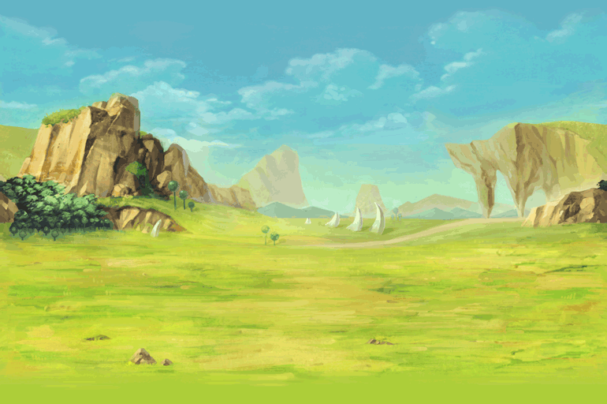

First of all, I would like to thank you for viewing my website. :D
It’s nice to know that my hard work wasn’t all for nothing.
It has truly been a fun time creating this so far. I would like to thank Ma’am
Aline Teresa L. Mendoza for helping me throughout the entire process.
She would always clarify things whenever I didn’t understand them or had
misconceptions along the process of creating my website. I would also like to thank
my friends and classmates for helping out in finding errors or things that I could
have still improved on. They’ve been a great help in spotting things that I didn’t
whenever I scanned through the pages after I’ve changed something.
Anyways, thank you once again for taking the time to view my website and have a
great rest of your day!
